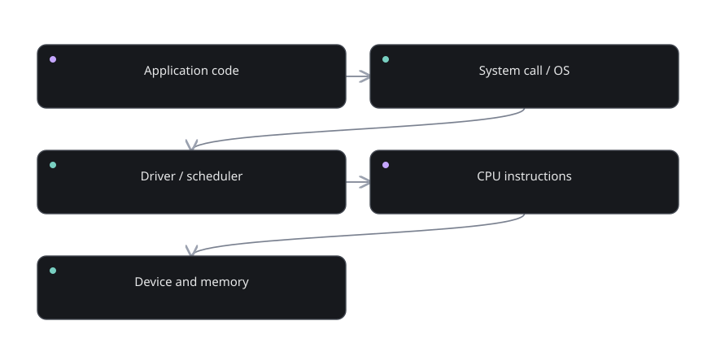

Part 12 of 12
The wider computer system
Understand what was deliberately simplified and how a modern computer grows from the same ideas.
The story before the details
A modern computer is still built from physical state and computation, but many additional layers make it usable. The operating system allows programs to share time and memory, provides files and device access, and enforces permissions. Software does not run in an unbounded virtual world: processors, memory systems and device controllers enforce many of those rules.
Caches and pipelines explain why physical computers differ in speed even when they support similar instructions. A cache keeps useful nearby data so repeated accesses are faster on average. A pipeline overlaps stages of different instructions so the machine completes more work per unit time. Neither feature changes the fundamental meaning of adding two numbers.
Compilers connect familiar programming languages to this hardware. They choose sequences of machine operations that implement source-level behavior. The complete view now fits together: electrical state represents bits; gates transform bits; sequential circuits preserve bits; CPUs execute encoded operations; operating systems and applications turn those operations into tools people recognize.

What you will discover
These six lessons are arranged so each one answers a question created by the previous one. Do not rush to the last lesson. If a concept feels opaque, use the checkpoint before continuing.
- 12.01The operating system↗Why can many programs share one machine?
- 12.02Interrupts and exceptions↗What if something urgent happens?
- 12.03Cache and the memory hierarchy↗Why is a CPU faster than RAM?
- 12.04Pipelining and parallel work↗Can a CPU overlap instructions?
- 12.05Compilers and high-level languages↗How does familiar code turn into machine actions?
- 12.06Everything is layers↗How do you keep a complete mental model?
Understand what was deliberately simplified and how a modern computer grows from the same ideas. You should be able to explain each concept using only an input, a rule, an output, and any state that must be retained.